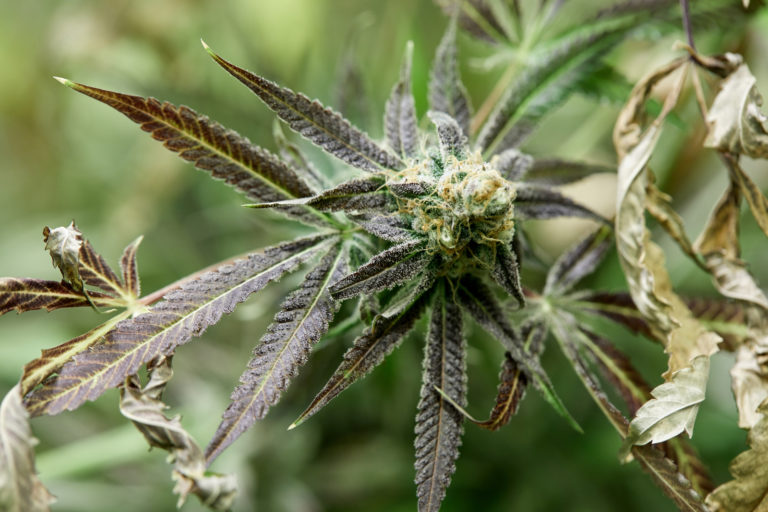

|  | กัญชาคืออะไรกัญชา เป็นพืชล้มลุกคล้ายต้นหญ้า มีสารเคมีอยู่ในใบกัญชาชื่อ Cannabinoids ซึ่งมีฤทธิ์สำคัญได้แก่ THC และ CBD ในปัจจุบัน กันชานิยมนำไปใช้อย่างแพร่หลาย ไม่ว่าจะเป็น สเปรย์ น้ำมัน แคปซูล เครื่องพ่นไอระเหยทางการแพทย์ ไปจนถึงการนำมาใส่ในอาหาร และเครื่องดื่มต่างๆ และในทางการแพทย์นั้น กัญชาทุกนำมาใช้ในการรักษาโรคต่างๆ โดยแต่ละรูปแบบของการรักษา ให้ปริมาณความเข้มของสารแคนนาบินอยด์ที่ไม่เหมือนกัน และตอบสนองความต้องการของผู้ป่วยที่แตกต่างกัน ทั้งนี้ขึ้นอยู่กับดุลยพินิจของแพทย์ผู้เชี่ยวชาญในการดูแล อย่างไรก็ตาม เราควรใช้สารสกัดกัญชาในปริมาณที่พอเหมาะ เพราะกัญชานั้นมี ทั้งประโยชน์และโทษของการใช้กัญชา หากใช้ในปริมาณที่มากเกินไป อาจส่งผลเสียในระยะยาวได้
|
||